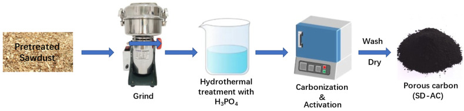
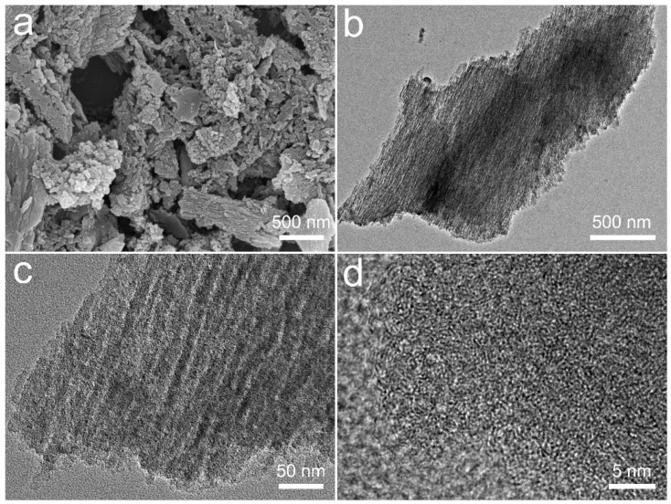
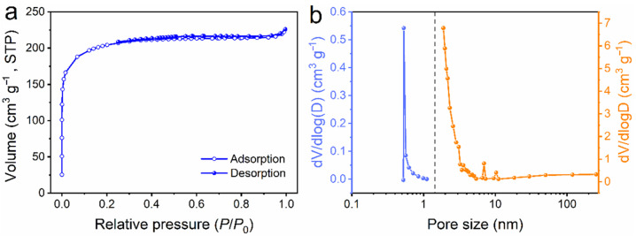
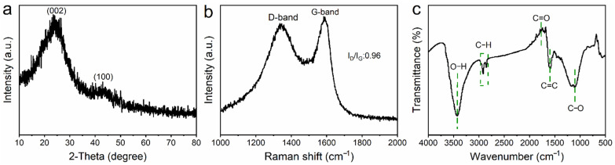
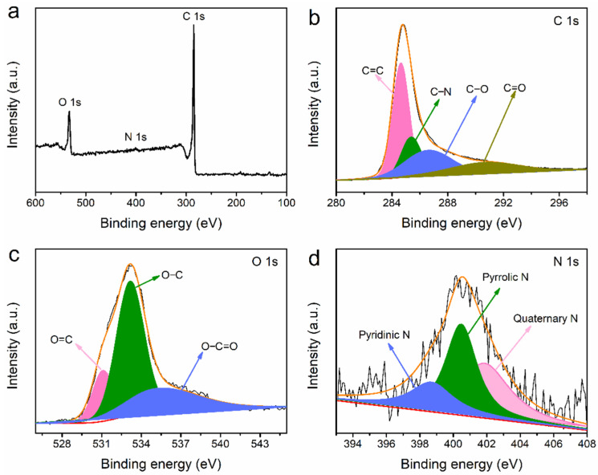
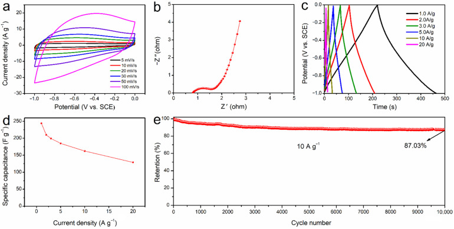
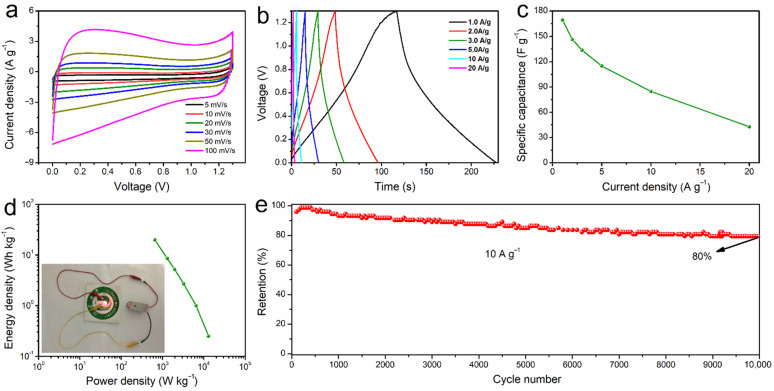

Sawdust-Derived Activated Carbon with Hierarchical Pores for High-Performance Symmetric Supercapacitors
本地阅读版：出版社提交的完整 XML 正文与原图。排版由本项目生成；原始 XML 为证据。不是出版社 PDF。
DOI: 10.3390/nano12050810
Abstract
AbstractThe recyclable utilization of waste biomass is increasingly important for the development of a sustainable society. Here, the sawdust-derived activated carbon (SD-AC) has been prepared via a convenient H3PO4-based activation method and further trialed as an electrode for use as a high-performance symmetric supercapacitor. The as-prepared SD-AC possesses a hierarchically porous structure with micropores (0.55 nm) and mesopores (2.58 nm), accounting for its high specific surface area of 621 m2 g−1, with a pore volume of 0.35 cm3 g−1. Such a hierarchically porous structure can offer a favorable pathway for fast ion penetration and transportation, enhancing its electrochemical performance. As a result, the SD-AC electrode exhibits a maximum specific capacitance of up to 244.1 F g−1 at 1.0 A g−1, a high rate capability (129.06 F g−1 at 20 A g−1), and an excellent cycling performance, with 87% retention over 10,000 cycles at 10 A g−1. Of particular note is that the SD-AC-based symmetric supercapacitor achieves a maximum energy density of 19.9 Wh kg−1 at the power density of 650 W kg−1, with a long-term cycle lifespan. This work showcases the recyclable utilization of waste biomass for the preparation of high-value activated carbon for efficient energy storage. Keywords: sawdust, activated carbon, H3PO4 activation, hierarchically porous structure, symmetric supercapacitors
1. Introduction
P0001
To solve renewable sources depletion problems, the demand for supercapacitors is sharply increasing, especially for hybrid or electric vehicles [1,2]. Supercapacitors possess excellent energy storage properties, including high specific capacity, fast charging time, high power density, long-term cycle lifespan, low-cost, and good safety [3,4,5,6,7]. At present, porous carbon is recognized as a promising electrode candidate because of its low cost, high surface area and volume, excellent conductivity, and physicochemical stability [8]. As typical eco-friendly resources, biomass has become a global hot topic of sustainable chemistry due to its great potential for practical application [9,10]. For example, rice husk, corn husk, coffee grounds, sugarcane, leaves, and coals have been applied as precursors for making porous carbon [10,11,12,13,14,15,16]. A further attempt has been made to develop competitive porous carbon from readily available wood wastes [17]. Considering that the annual production of wood wastes by the forestry industry worldwide is massive, the reuse of the wood wastes may be both environmentally and economically sustainable [18]. In general, a larger specific surface area (SSA) may offer more active sites for electrolyte components, resulting in higher capacitance [19]. Hence, physical and chemical activation methods have been principally and widely applied for pore formation to increase the SSA. In comparison, the chemical activation method is relatively simple and effective.
P0002
In this work, a readily available sawdust (wood waste) was utilized as a carbon source to prepare a porous activated carbon (SD-AC) material via a cost-effective route combing carbonization with H3PO4 activation in one step. Morphological and structural characterizations were systematically conducted to evaluate the physio-chemical properties of the SD-AC. The results indicated that the as-prepared SD-AC had a high specific surface area of 621 m2 g−1 and a high pore volume of 0.35 cm3 g−1, with hierarchical pores, which was favorable for its high-performance energy storage. As expected, the SD-AC electrode exhibited a maximum specific capacitance (244.1 F g−1 at 1.0 A g−1) with an excellent rate (129.06 F g−1 at 20 A g−1) and cycling performance (87.03% retention over 10,000 cycles at 10 A g−1). Notably, the SD-AC//SD-AC symmetric supercapacitor delivered a maximum energy density of 19.9 W h kg−1 at the power density of 650 W kg−1, with a long cycling lifespan. This work showcases a good utilization of wood waste to produce high-value porous activated carbon for efficient energy storage.
2. Materials and Methods
2.1. One-Step Synthesis of the SD-AC
P0003
Figure 1 shows the schematic illustration of the synthetic process for the SD-AC. First, 10.0 g of Chinese fir sawdust was dispersed in 200 mL of deionized water with magnetic stirring at 600 rpm for 3 h to remove dust and impurities, followed by drying at 80 °C in an oven. Then, the pretreated sawdust was ground (BJ-800A, Baijie Equipment Co., Ltd., Huzhou, China) and screened to be <75 µm. The ground powder was subsequently impregnated into a 85 wt% H3PO4 solution (the mass ratios of H3PO4:sawdust was 1:4.8) at room temperature, left for 2 h, and then heated in a furnace to 550 °C for 90 min. The heating rate was 10 °C min−1. Finally, the furnace was turned off and cooled down to room temperature. The resulting sample was rinsed several times using deionized water (90–100 °C) until the pH of the wash water was near-neutral, and then dried at 105 °C for about 12 h.
P0004
The schematic illustration of the synthetic process for the SD-AC.
2.2. Characterizations of SD-AC
P0006
Elemental analysis (C, N, H, and O) was performed using a vario EL Cube analyzer (EA, Elementar, Langenselbold, Germany). The surface morphology and microstructure of SD-AC were examined using a JEOL scanning electron microscope (FE-SEM, JSM-7800F, Tokyo, Japan) and a JEOL transmission electron microscope (TEM, JEM-2100F, Japan). For TEM specimen preparation, the SD-AC sample was ultrasonically suspended in ethanol for 5 min, and then several droplets of the above suspension were deposited on a cooper mesh grid. The specific surface area (SSA) and micro- and nano-pores were determined using the N2 adsorption method (Tristrar II 3020, Micrometric, Norcross, GA, USA). The SD-AC was also subjected to X-ray powder diffraction analysis (XRD, Bruker D8, Mannheim, Germany) equipped with Cu Kα radiation at 40 kV and 40 mA, with a step width of 0.05° and count time of 0.6 s per step. Raman analysis was performed by the Raman spectrometer with a 532 nm laser for illumination (T6400, Kejie Tianjin, China), taking the 520 cm−1 silicon raman band for energy calibration. The surface elemental composition and chemical states were investigated using X-ray photoelectron spectroscopy (XPS, Thermo Scientific ESCALAB 250Xi system with a monochromatic Al Kα X-ray source; C 1s at 284.6 eV for energy calibration). Transmission infrared spectra were collected using a Fourier transform infrared spectrometer (FTIR, Nicolet 20, Thermo Scientific, Waltham, MA, USA). For FTIR specimen preparation, 1–2 mg of the SD-AC was mixed with 200 mg KBr and then and pressed into small discs at 10 tons pressure.
2.3. Electrochemical Measurements
P0007
A pretreated nickel foam (NF) sheet (1 cm × 1 cm) served as the current collector. The working electrodes were made of 80 wt% SD-AC as the active material, 10% acetylene black as the conductive additive, and 10% poly-tetrafluoroethylene (PTFE) as the binder. The weight of the SD-AC was about 1 mg for each working electrode. The electrolyte was 3 M KOH solution. A platinum plate and an Hg/HgO electrode were used as the counter and reference electrodes, respectively.
P0008
The electrochemical analysis of the SD-AC-based electrode was conducted by using an Interface 1000E Gamry electrochemical workstation. Cyclic voltammetry (CV) and galvanostatic charge/discharge (GCD) measurements were performed in a potential window of −1 to 0 V. Electrochemical impedance spectroscopy (EIS) was collected from 0.01 Hz to 100 kHz. The gravimetric specific capacitance Cs (F g−1), the energy density (E, Wh kg−1), and the power density (P, W kg−1) were determined by Equations (1)–(3), respectively,
P0009
where I (A) is the galvanostatic discharge current, Δt (s) is the galvanostatic discharge time, m (g) is the net weight of the SD-AC, and ΔV (V) represents the potential range.
3. Results
3.1. Physical Characterization of the SD-AC
P0010
The elemental contents of the SD-AC were evaluated by elemental analysis (EA), as summarized in Table 1, indicating that the SD-AC is composed of C, O, H, and N, with the weight percentage of 67.46%, 26.83%, 3.02%, and 0.22%, respectively.
P0011
The elemental composition (wt%) of the SD-AC.
P0013
SampleC (%)O (%)H (%)N (%)SD-AC67.4626.833.020.22
P0014
The rough and irregular particle is clearly visible under SEM, as observed in Figure 2a. In addition, the external surface of SD-AC is found to be covered with small aligned irregular shaped particles; this is likely caused by pyrolysis at 550 °C, leading to the collapse of the mesopores and the closing of the sub-micron pores during the thermal decomposition of biomass [20]. TEM images (Figure 2b,c) further reveal the unique porous structure of the SD-AC. A high-resolution TEM (HRTEM, Figure 2d) image demonstrates that numerous nanopores exist in the carbon skeletons of the SD-AC, indicating its well-developed porous characteristic. Such a hierarchically porous structure would be highly important for the fast transfer and diffusion of ions.
P0015
The SEM image (a), TEM images (b,c), and HRTEM image (d) of the SD-AC.
P0017
Since the surface area with a porous structure is the key to high-performance electrode materials in energy storage, the Ar adsorption/desorption and pore structure characteristics of SD-AC were further evaluated (Figure 3 and Table 2). As shown in Figure 3a, the isotherm profile is assigned to be type I, with a rapid adsorption of Ar at low relative pressures (P/P0 < 0.03), indicating the presence of a large number of micropores [21]. From P/P0 = 0.03 onwards, the amount of adsorption increases slowly until P/P0 reaches 0.3, suggesting the formation of small-sized mesopores [4]. The size of these micropores and mesopores, derived using the density functional theory (DFT), is measured at about 0.55 and 2.58 nm, respectively (Figure 3b). The BET surface area and pore volume of the SD-AC are calculated to be 621 m2 g−1 and 0.35 cm3 g−1, respectively. The high specific surface area with hierarchical pores would provide a favorable pathway for fast ion penetration and transportation [22].
P0018
The porosity characteristics of the SD-AC: (a) Ar adsorption/desorption plot and (b) pore size distribution.
The XRD analysis of the SD-AC (Figure 4a) showed two characteristic broad humps of carbon, including the diffraction from the {002} planes located at about 24.1°, indicative of the disordered structure of carbon [23]. In the Raman spectrum of carbon materials, the G band relates to the graphitic layers (associated with the tangential vibration of the carbon atoms), while the D band is associated with defective graphitic structures, or disordered carbon [24,25]. The intensity ratio of these two peaks partially depends on the graphitization degree [24]. The Raman spectrum of the SD-AC displayed two typical peaks centered at approximately 1335 and 1583 cm−1, corresponding to the D and G band of carbon (Figure 4b), respectively. The G band implied the existence of a graphite-like structure in the SD-AC, which can enhance the electrical conductivity of the electrode material [26]. Clearly, the D band intensity of the SD-AC was smaller than its G band intensity, with ID/IG = 0.9, suggesting SD-AC is partially graphitized. These carbonaceous materials with partial graphitization are highly suitable for application as electrodes, owing to their high electronic conductivities. The FTIR spectrum (Figure 4c) was recorded to further examine the variations in the functional groups. The bands at 1108 and 1592 cm−1 are attributed to C−O (aromatic ether) and C=C aromatic rings, respectively, which are typical for the cellulose and lignin structures, respectively [27]. The band at 1980 cm−1 is due to C=O stretching vibrations, while the peaks at 2854 and 2917 cm−1 correspond to C−H stretching vibrations. In addition, a strong O–H stretching vibration band centered at 3430 cm−1 (typical of phenylic acid) was also observed [28]. These functional groups can accelerate the adsorption of electrolyte ions on the surface of the SD-AC, providing extra faradaic pseudocapacitance [29].
P0024
(a) The XRD pattern, (b) Raman, and (c) FTIR spectra of the SD-AC, respectively.
P0026
The XPS results for SD-AC are presented in Figure 5. As shown in Figure 5a, the SD-AC is dominantly composed of C and O, with minor amounts of N, which is consistent with the EA result. As shown in Figure 5b, the C 1s peak is fitted into four peaks: at 284.7, 285.4, 286.7, and 290.9 eV for C=C, C−N, C−O, and C=O, respectively [29]. It is also found that the peak area of C−N peak is smallest compared to the other peaks, indicating the smallest content of C−N. Figure 5c clearly shows that the O 1s XPS peak is fitted with three peaks at 531.1 eV (O=C), 533.2 eV (O−C), and 535.6 eV (O−C=O). The high-resolution N 1s XPS spectrum (Figure 5d) comprises three components including pyridinic N (398.6 eV), pyrrolic/pyridinic N (400.5 eV), and quaternary N (401.8 eV). The N species at the middle of graphite (quaternary N) is generally less active than other N functionalities [30]. The SD-AC has a small amount of N content (0.22%), but it has been reported to have a positive effect on energy, such as Na+ storage [31].
P0027
(a) The XPS survey, high-resolution; (b) C 1s; (c) O 1s; (d) N 1s spectra of the SD-AC.
3.2. Electrochemical Properties of the SD-AC in a Three-Electrode Test
P0029
The electrochemical characteristics of the SD-AC (Figure 6) was tested in a three-electrode setup in 3 M KOH solution. At various scan rates of 5–100 mV s−1, the CV curves clearly show the quasi-rectangle shape of the CV loop in the potential window of −1 to 0 V (Figure 6a), illustrating an excellent electric double layer capacitive behavior and a low contact resistance. The charge transfer characteristics of the SD-AC were investigated using electrochemical impedance spectroscopy (EIS). Figure 6b shows the Nyquist plot of the SD-AC electrode and Figure S1 illustrates the equivalent electrical circuit model used for fitting the Nyquist plot and the values derived from the fitted data. Rs represents the equivalent series resistance arising from the electrolyte resistance and cell components. The value of Rs is 0.77 Ω, reflecting the low resistance of the equivalent series. A typical Nyquist diagram includes a depressed semicircle at high frequencies, reflecting the charge-transfer resistance (Rct) with a double-layer capacitance CPE (constant phase element). The value of Rct can be calculated from the diameter of the semicircle [32,33], which is 0.55 Ω in the present case. At low frequencies, an inclined line at 45° is the phase of Warburg impedance (ZW) and the nearly vertical straight line is due to the finite length effect [34,35]. Figure 6c displays the GCD curves at different current densities of 1.0 to 20 A g−1 with an isosceles quasi-triangular shape, demonstrating the preferential electrical dual-layer storage mechanism [36]. However, the occurrence of faradaic reactions by pseudocapacitance causes the slight deviation from the linear voltage profiles [17]. The specific capacitance values of the SD-AC (Figure 6d) are calculated to be 244.1, 210.2, 199.26, 184.95, 162.2, and 129.06 F g−1 at the current densities of 1, 2, 3, 5, 10, and 20 A g−1, respectively. Moreover, the SD-AC electrode shows an excellent cycling performance, with 87.03% capacitance over 10,000 cycles at 10 A g−1 (Figure 6e). Compared to other biomass-based carbon materials (Table S1), the SD-AC shows a competitive electrochemical performance as a potential candidate for high-performance supercapacitors.
P0030
The electrochemical characteristics of the SD-AC electrode in a three-electrode test: (a) CV curves at various scan rates of 5–100 mV s−1; (b) the Nyquist plot; (c) the GCD curves at various current densities ranging from 1.0 to 20 A g−1; (d) specific capacitance as a function of current density; (e) cycling performance at 10 A g−1 over 10,000 cycles.
3.3. Electrochemical Properties of the SD-AC-Based Symmetric Supercapacitor
P0032
In order to evaluate the SD-AC electrode for practical application, the SD-AC//SD-AC symmetric supercapacitor was assembled and tested in a two-electrode system. Figure 7a illustrates the CV curve profiles obtained at various scan rates of 5–100 mV s−1, with typical rectangular-shape, suggesting an excellent reversible capacitive behavior. Humps observation in the CV curves is mainly because of the faradaic process of oxygen-containing functional groups [37]. Figure 7b displays the GCD curves at different current densities. The quasi-symmetrical shape rather than completely symmetrical triangle observed, especially at low current densities, is possibly due to the presence of abundant functional groups. In particular, the O-containing functional groups provide the pseudocapacitive contribution to the total capacitance. The specific capacitance of the device is up to 169.4 F g−1 at the current density of 1 A g−1 (Figure 7c). The remarkable capacitance of the SD-AC can be attributed to its high specific surface area with hierarchical pores. The Ragone plot in Figure 7d shows the energy/power densities of the SD-AC//SD-AC symmetric supercapacitor, indicating a maximum energy density of 19.9 Wh kg−1 at the power density of 650 W kg−1 (1 A g−1). The SD-AC//SD-AC device can successfully light a red LED (inset in Figure 7d). In addition, the long-term cycle stability of the device was also evaluated. After 10,000 cycles, the device can still retain about 80.0% of capacitance at a high current density of 10 A g−1 (Figure 7e). Furthermore, the comparison of our device with other previously reported supercapacitors is shown in Table S2. It is clearly found that the SD-AC electrode exhibits excellent electrochemical performance due to its large surface area and pore volume, as well as the abundant functional groups. The one-step synthesis of the SD-AC in this work could provide a simple sustainable solution for industrial wood waste in its application for the preparation of a high-performance carbon material for electrochemical energy storage.
P0033
The electrochemical characteristics of the SD-AC//SD-AC symmetric supercapacitors: (a) CV curves at various scan rates; (b) the GCD curves at various current densities; (c) specific capacitance at various current densities; (d) the Ragone plot and a photograph of the LED lit by the SD-AC-based symmetric supercapacitors (inset); (e) cycling stability at 10 A g−1 over 10,000 cycles.
4. Conclusions
P0035
In conclusion, the SD-AC with a hierarchically porous structure has been synthesized using a recyclable wood waste biomass via a carbonization method combining H3PO4 activation in one step at 550 °C. The SD-AC exhibits a high surface area of 621 m2 g−1 and a very porous structure, with micropores (0.55 nm) and mesopores (2.58 nm). Accordingly, the SD-AC electrode presents the highest specific capacitance of 244.1 F g−1 at 1.0 A g−1 and a remarkable cycling stability, with 87.03% retention after 10,000 cycles at 10 A g−1. Therefore, the SD-AC-based symmetric supercapacitor achieves a high power density of 19.9 Wh kg−1 and a power density of 650 W kg−1, along with a long cycling lifespan. The excellent electrochemical performance of the SD-AC electrode can be attributed to two main factors: (i) The large surface area and large pore volume with hierarchical pores is beneficial for rapid ion penetration and transportation, boosting its high capacitance and rate capability. (ii) The abundant functional groups provide extra faradaic pseudocapacitance. This work offers a sustainable pathway for utilizing waste biomass to produce high-value activated carbon for efficient energy storage.
Acknowledgments
P0036
Y.Z. gratefully acknowledges the financial support from Fujian Hengxiang Co. Ltd. The authors also thank the contributions of Zezu Zhang, Yongtao Lan, Lijua Hu, Ziruo Wang, including purchasing materials and conducting relative experiments. C.W. gratefully acknowledges the financial support from Zhongyan Jilantai Chlor-Alkali Chemical Co., Ltd. (FZ2019-RWS-027).
Supplementary Materials
P0037
The following supporting information can be downloaded at: https://www.mdpi.com/article/10.3390/nano12050810/s1. Figure S1: The equivalent electrical circuit model used for fitting the Nyquist plot and the values derived from the fitted data. Table S1: Electrochemical performance comparison of biomass-derived carbon materials, Table S2: Electrochemical performance of our SD-AC//SD-AC symmetric supercapacitor in comparison with other previously reported supercapacitors. References [38,39,40,41,42,43,44,45,46,47,48] are cited in the supplementary materials.
P0038
Click here for additional data file.
Author Contributions
P0040
Y.Z. acquired funds, organized the project, and prepared the original draft. J.L. (Jun Li) performed the characterizations and electrochemical measurements. S.H. performed the synthesis of the SD-AC. G.Q. and J.S. edited the format of paper. S.Z. and Y.W. provided experimental instruments. C.W. and J.L. (Jiabiao Lian) supervised this work and revised the paper. All authors contributed to the writing, data interpretation, and discussion. All authors have read and agreed to the published version of the manuscript.
Funding
P0041
This research was funded by the Natural Science Foundation of the Fujian Province of China (2020J05221), the High-level Talent Scientific Research Start-up Project funded by Wuyi University, China (YJ202108), the Fujian Undergraduate Training Program for Innovation and Entrepreneurship (S202110397035), the Enterprise workstation project of Wuyi University (2020-ZQGZZ-015), the Natural Science Foundation of the Jiangsu Province (BK20170549), the National Natural Science Foundation of China (21706103), and the Nanjing Tech University Research Start-up Fund (38274017111).
Data Availability Statement
P0042
Not applicable.
Conflicts of Interest
P0043
The authors declare no conflict of interest.
Footnotes
P0044
Publisher’s Note: MDPI stays neutral with regard to jurisdictional claims in published maps and institutional affiliations.
References
Associated Data
Supplementary Materials
P0045
Click here for additional data file.
Data Availability Statement
P0047
Not applicable.
原文图表（含文末 floats-group）

Figure 1The schematic illustration of the synthetic process for the SD-AC.

Figure 2The SEM image (a), TEM images (b,c), and HRTEM image (d) of the SD-AC.

Figure 3The porosity characteristics of the SD-AC: (a) Ar adsorption/desorption plot and (b) pore size distribution.

Figure 4(a) The XRD pattern, (b) Raman, and (c) FTIR spectra of the SD-AC, respectively.

Figure 5(a) The XPS survey, high-resolution; (b) C 1s; (c) O 1s; (d) N 1s spectra of the SD-AC.

Figure 6The electrochemical characteristics of the SD-AC electrode in a three-electrode test: (a) CV curves at various scan rates of 5–100 mV s−1; (b) the Nyquist plot; (c) the GCD curves at various current densities ranging from 1.0 to 20 A g−1; (d) specific capacitance as a function of current density; (e) cycling performance at 10 A g−1 over 10,000 cycles.

Figure 7The electrochemical characteristics of the SD-AC//SD-AC symmetric supercapacitors: (a) CV curves at various scan rates; (b) the GCD curves at various current densities; (c) specific capacitance at various current densities; (d) the Ragone plot and a photograph of the LED lit by the SD-AC-based symmetric supercapacitors (inset); (e) cycling stability at 10 A g−1 over 10,000 cycles.
The elemental composition (wt%) of the SD-AC.
Sample
C (%)
O (%)
H (%)
N (%)
SD-AC
67.46
26.83
3.02
0.22
The parameters of the SD-AC from BET analysis.
Sample
SBET(m2 g−1)
Vtotal(cm3 g−1)
Vmicro(cm3 g−1)
Average Pore Size(nm)
SD-AC
621
0.35
0.24
0.55/2.25
References
1.Jimena C.G., Alain C., Vanessa F. Energy storage in supercapacitors: Focus on tannin-derived carbon electrodes. Front. Mater. 2020;7:217.2.Yu P., Wei T., Wu F.F., Zhang C., Luo Y.H., Liu H., Wang Z.G. Recent progress in plant-derived hard carbon anode materials for sodium-ion batteries: A review. Rare Metals. 2020;39:1019–1033. doi: 10.1007/s12598-020-01443-z.3.Zhang Q., Han K., Li S.J., Li M., Li J.X., Ren K. Synthesis of garlic skin-derived 3D hierarchical porous carbon for high-performance supercapacitors. Nanoscale. 2018;10:2427–2437. doi: 10.1039/C7NR07158B.4.Huang J.Y., Liang Y.R., Hu H., Liu S.M., Cai Y.J., Dong H.W., Zheng M.T., Xiao Y., Liu Y.L. Ultrahigh-surface-area hierarchical porous carbon from chitosan: Acetic acid mediated efficient synthesis and its application in superior supercapacitors. J. Mater. Chem. A. 2017;5:24775–24781. doi: 10.1039/C7TA08046H.5.Wu X., Yao S.Y. Flexible electrode materials based on WO3 nanotube bundles for high performance energy storage devices. Nano Energy. 2017;42:143–150. doi: 10.1016/j.nanoen.2017.10.058.6.Guo C.X., Yilmaz G., Chen S.C., Chen S.F., Lu X.M. Hierarchical nanocomposite composed of layered V2O5/PEDOT/MnO2 nanosheets for high-performance asymmetric supercapacitors. Nano Energy. 2015;12:76–87. doi: 10.1016/j.nanoen.2014.12.018.7.Li Z., Zhang L., Babak S.A., Tan X.H., Xu Z.W., Wang H.L., Brian C.O., Chris M.B., Holt D.M. Carbonized chicken eggshell membranes with 3D architectures as high-performance electrode materials for supercapacitors. Adv. Energy Mater. 2012;2:431–437. doi: 10.1002/aenm.201100548.8.Wang K., Zhao N., Lei S.W., Yan R., Tian X.D., Wang J.Z., Song Y., Xu D.F., Guo Q.G., Liu L. Promising biomass-based activated carbons derived from willow catkins for high performance supercapacitors. Electrochim. Acta. 2015;166:1–11. doi: 10.1016/j.electacta.2015.03.048.9.Han X.R., Guo X.T., Xu M.J., Pang H., Ma Y.W. Clean utilization of palm kernel shell: Sustainable and naturally heteroatom-doped porous activated carbon for lithium-sulfur batteries. Rare Metals. 2020;39:1099–1106. doi: 10.1007/s12598-020-01439-9.10.Ramachandran K., Sherif A.E., Subburam G., Cui Y.X., Li S., Li J., Wang J., Liu X.H., Lian J.B., Li H.M. Optimizing the microstructure of carbon nano-honeycombs for high-energy sodium-ion capacitor. Electrochim. Acta. 2022;403:139675. doi: 10.1016/j.electacta.2021.139675.11.He X.J., Li X.J., Wang X.T., Zhao N., Yu M.X., Wu M.B. Efficient preparation of porous carbons from coal tar pitch for high performance super capacitors. Carbon. 2015;85:448. doi: 10.1016/j.carbon.2014.12.084.12.Wei B., Wei T.T., Xie C.F., Li K., Hang F.X. Promising activated carbon derived from sugarcane tip as electrode material for high-performance supercapacitors. RSC Adv. 2021;11:28138–28147. doi: 10.1039/D1RA04143F.13.Chiu Y.H., Lin L.Y. Effect of activating agents for producing activated carbon using a facile one-step synthesis with waste coffee grounds for symmetric supercapacitors. J. Taiwan Inst. Chem. E. 2019;101:177–185. doi: 10.1016/j.jtice.2019.04.050.14.Liu J.J., Wu Q., Zhu Q.Z., Guan Y.B., Xu B. Hierarchical porous carbon prepared from mulberry leaves for supercapacitors. Ionics. 2019;25:1–7. doi: 10.1007/s11581-019-03023-3.15.Tian Y.X., Xiao C.Y., Yin J., Zhang W.L., Bao J.P., Lin H.B., Lu H.Y. Hierarchical porous carbon prepared through sustainable CuCl2 activation of rice husk for high-performance supercapacitors. Chem. Sel. 2019;4:2314–2319. doi: 10.1002/slct.201804002.16.Zhou M., Wang Q., Yuan Y., Luo S.H., Zhang Y.H., Liu X. Biocarbon with different microstructures derived from corn husks and their potassium storage properties. Rare Metals. 2021;40:3166–3174. doi: 10.1007/s12598-021-01775-4.17.Sara P.R., Oscar P., Maria T., Izquierdo C.S., Po S.P., Alain C., Juan M., Fierro V. Upgrading of pine tannin biochars as electrochemical capacitor electrodes. J. Colloid Interface Sci. 2021;601:863–876. doi: 10.1016/j.jcis.2021.05.162.18.Ma Y., Yin J.W., Liang H.Q., Yao D.X., Xia Y.F., Zuo K.H., Zeng Y.P. A two step approach for making super capacitors from waste wood. J. Clean. Prod. 2021;279:123–786. doi: 10.1016/j.jclepro.2020.123786.19.Zhu Y.Y., Chen M.M., Li Q., Yuan C., Wang C.Y. A porous biomass-derived anode for high-performance sodium-ion batteries. Carbon. 2018;129:695–701. doi: 10.1016/j.carbon.2017.12.103.20.Rawal A., Joseph S.D., Hook J.M., Chia C.H., Munroe P.R., Donne S., Lin Y., Phelan D., Mitchell D.R.G., Pace B., et al. Mineral-biochar composites: Molecular structure and porosity. Environ. Sci. Technol. 2016;50:7706–7714. doi: 10.1021/acs.est.6b00685.21.Cao T.T., Cheng J.K., Ma J., Yang C.L., Yao M.Q., Liu F., Deng M., Wang X.D., Ren Y. Facile synthesis of microporous carbons from biomass waste as high performance supports for dehydrogenation of formic acid. Nanomaterials. 2021;11:3028. doi: 10.3390/nano11113028.22.Jayaramulu K., Dubal D.P., Nagar B., Ranc V., Tomanec O., Petr M., Datta K.K.R., Zboril R., Gómez-Romero P., Fischer R.A. Ultrathin hierarchical porous carbon nanosheets for high-performance supercapacitors and redox electrolyte energy storage. Adv. Mater. 2018;30:1705789. doi: 10.1002/adma.201705789.23.Dai Y.Q., Li G.C., Li X.H., Guo H.J., Wang Z.X., Yan G.C., Wang J.X. Ultrathin porous graphitic carbon nanosheets activated by alkali metal salts for high power density lithium-ion capacitors. Rare Metals. 2020;39:1364–1373. doi: 10.1007/s12598-020-01509-y.24.Li Z., Xu Z.W., Tan X.H., Wang H.L., Chris M.B., Holt T.S., Brian C.O., David M. Mesoporous nitrogen-rich carbons derived from protein for ultrahigh capacity battery anodes and supercapacitors. Energy Environ. Sci. 2013;6:871–878. doi: 10.1039/c2ee23599d.25.Kim H., Cho J.y., Jang S.Y., Song Y.W. Deformation-immunized optical deposition of graphene for ultrafast pulsed lasers. Appl. Phys. Lett. 2011;98:831. doi: 10.1063/1.3536502.26.Wang H.L., Yu W.H., Shi J., Mao N., Chen S.G., Liu W. Biomass derived hierarchical porous carbons as high-performance anodes for sodium-ion batteries. Electrochim. Acta. 2016;188:103–110. doi: 10.1016/j.electacta.2015.12.002.27.Zubrik A., Matik M., Hredzák S., Lovás M., Danková Z., Kováčová M., Briančin J. Preparation of chemically activated carbon from waste biomass by single-stage and two-stage pyrolysis. J. Clean. Prod. 2017;143:643–653. doi: 10.1016/j.jclepro.2016.12.061.28.Bardestani R., Kaliaguine S. Steam activation and mild air oxidation of vacuum pyrolysis biochar. Biomass Bioenergy. 2018;108:101–112. doi: 10.1016/j.biombioe.2017.10.011.29.Li J.X., Han K.H., Li S.J. Porous carbons from Sargassum muticum prepared by H3PO4 and KOH activation for supercapacitors. J. Mater. Sci. Mater. Electron. 2018;29:8480–8491. doi: 10.1007/s10854-018-8861-2.30.Olejniczak A., Lezanska M., Wloch J., Kucinska A., Lukaszewicz J.P. Novel nitrogen-containing mesoporous carbons prepared from chitosan. J. Mater. Chem. A. 2013;1:8961–8967. doi: 10.1039/c3ta11337j.31.Wang L.L., Wang J., Ng D.H., Li S., Zou B.B., Cui Y.X., Liu X.H., Sherif A.E., Qiu J.X., Lian J.B. Operando mechanistic and dynamic studies of N/P co-doped hard carbon nanofibers for efficient sodium storage. Chem. Commun. 2021;57:9610–9613. doi: 10.1039/D1CC03961J.32.Mei B.A., Munteshari O., Lau J., Dunn B. Laurent pilon physical interpretations of Nyquist plots for EDLC electrodes and devices. J. Phys. Chem. C. 2018;122:194–206. doi: 10.1021/acs.jpcc.7b10582.33.Mathis T.S., Kurra N., Wang X.H., Pinto D., Simon P., Gogotsi Y. Energy storage data reporting in perspective–guidelines for interpreting the performance of electrochemical energy storage systems. Adv. Energy Mater. 2019;9:1902007. doi: 10.1002/aenm.201902007.34.Ho C., Raistrick I.D., Huggins R.A. Application of A-C techniques to the study of lithium diffusion in tungsten trioxide thin films. J. Electrochem. Soc. 1980;127:343–350. doi: 10.1149/1.2129668.35.Shaju K.M., Subba Rao G.V., Chowdari B.V.R. EIS and GITT studies on oxide cathodes, O2-Li(2/3)+x(Co0.15Mn0.85)O2 (x=0 and 1/3) Electrochim. Acta. 2003;48:2691–2703. doi: 10.1016/S0013-4686(03)00317-7.36.Wang D.B., Geng Z., Li B., Zhang C.M. High performance electrode materials for electric double-layer capacitors based on biomass-derived activated carbons. Electrochim. Acta. 2015;173:377–384. doi: 10.1016/j.electacta.2015.05.080.37.Zhang W.L., Lin N., Liu D.B., Xu J.H., Sha J.X., Yin J., Tan X.B., Yang H.P., Lu H.Y., Lin H.B. Direct carbonization of rice husk to prepare porous carbon for supercapacitor applications. Energy. 2017;128:618–625. doi: 10.1016/j.energy.2017.04.065.38.Sudhan N., Subramani K., Karnan M., Ilayaraja N., Sathish M. Biomass-derived activated porous carbon from rice straw for a high-energy symmetric supercapacitor in aqueous and non-aqueous electrolytes. Energy Fuels. 2016;31:977–985. doi: 10.1021/acs.energyfuels.6b01829.39.Bello A., Manyala N., Barzegar F., Khaleed A.A., Momodu D.Y., Dangbegnon J.K. Renewable pine cone biomass derived carbon materials for supercapacitor application. RSC Adv. 2016;6:1800–1809. doi: 10.1039/C5RA21708C.40.Peng C., Lang J., Xu S., Wang X. Oxygen-enriched activated carbons from pomelo peel in high energy density supercapacitors. RSC Adv. 2014;4:54662–54667. doi: 10.1039/C4RA09395J.41.Qu S., Wan J., Dai C., Jin T., Ma F. Promising as high-performance supercapacitor electrode materials porous carbons derived from biological lotus leaf. J. Alloys Compd. 2018;751:107–116. doi: 10.1016/j.jallcom.2018.04.123.42.Guo Y., Shi Z., Chen M., Wang C. Hierarchical porous carbon derived from sulfonated pitch for electrical double layer capacitors. J. Power Sources. 2014;252:235–243. doi: 10.1016/j.jpowsour.2013.11.114.43.Yan X., Jia Y., Zhuang L., Zhang L., Wang K., Yao X. Defective carbons derived from macadamia nut shell biomass for efficient oxygen reduction and supercapacitors. ChemElectroChem. 2018;5:1874–1879. doi: 10.1002/celc.201800068.44.Xia J., Zhang N., Chong S., Chen Y., Sun C. Three-dimensional porous graphene-like sheets synthesized from biocarbon via low-temperature graphitization for a supercapacitor. Green Chem. 2018;20:694–700. doi: 10.1039/C7GC03426A.45.Tian X., Ma H., Li Z., Yan S., Ma L., Yu F., Wang G., Guo X., Ma Y., Wong C. Flute type micropores activated carbon from cotton stalk for high performance supercapacitors. J. Power Sources. 2017;359:88–96. doi: 10.1016/j.jpowsour.2017.05.054.46.Zhao C., Huang Y., Zhao C., Shao X., Zhu Z. Rose-derived 3D carbon nanosheets for high cyclability and extended voltage supercapacitors. Electrochim. Acta. 2018;291:287–296. doi: 10.1016/j.electacta.2018.09.136.47.Feng H., Hu H., Dong H., Xiao Y., Cai Y., Lei B., Zheng M. Hierarchical structured carbon derived from bagasse wastes: A simple and efficient synthesis route and its improved electrochemical properties for high-performance supercapacitors. J. Power Sources. 2016;302:164–173. doi: 10.1016/j.jpowsour.2015.10.063.48.Liu Z., Zhu Z., Dai J., Yan Y. Waste biomass based-activated carbons derived from soybean Pods as electrode materials for high-performance supercapacitors. ChemistrySelect. 2018;3:5726–5732. doi: 10.1002/slct.201800609.